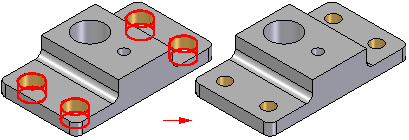

Resize Holes command
Use the Resize Holes command to resize one or more cylindrical or conical faces. You can use this command to resize cylindrical and conical faces on models you import from other applications or on models constructed with the feature commands in Solid Edge.

You can select the faces individually or drag a fence to select multiple faces. You can also select multiple faces with different diameters and resize them to one common size in a single operation.

When you use this command to edit a hole or cutout with thread attributes, a message is displayed to warn you that the existing thread attributes will be changed for the selected holes. You can use the options on the command bar to specify new thread attributes for the selected holes.
When resizing holes in a model imported from another application where two cylindrical or conical faces share a common axis, such as the faces on counterbored or countersunk holes, you should avoid using a fence to select the holes you want to resize.
For best results, you should individually select only the largest cylindrical or conical face that makes up each counterbored or countersunk hole you are resizing.